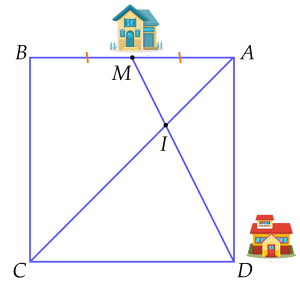

Câu 11. Đại số
Phần II — Trắc nghiệm đúng hoặc sai
0,76 điểm
Doanh thu (đơn vị: tỉ đồng) của hai chi nhánh một công ty trong năm 2024 và 2025 được cho trong bảng sau:
Chi nhánh | Năm
2024 | 2025
Hà Nội | $8$ | $10$
Hải Phòng | $12$ | $14$
(Nhấp vào ô màu vàng để chọn đúng / sai)
Mỗi ý a), b), c)… là một phát biểu độc lập: nhấp vào ô để chọn Đúng/Sai,
0,19 điểm mỗi ý.
Câu 12. Đại số
Phần II — Trắc nghiệm đúng hoặc sai
0,76 điểm
Cho đa thức $A=2x^2y+3xy^2 - 4x^2y+9xy^2$ .
(Nhấp vào ô màu vàng để chọn đúng / sai)
Mỗi ý a), b), c)… là một phát biểu độc lập: nhấp vào ô để chọn Đúng/Sai,
0,19 điểm mỗi ý.
Câu 13. Đại số
Phần III — Trắc nghiệm trả lời ngắn
0,39 điểm
Giá trị của biểu thức $A=27x^3 - 54x^2 + 36x - 8$ tại $x=3$ bằng bao nhiêu?
Trả lời ngắn — gõ kết quả, kèm đơn vị nếu đề hỏi đơn vị.
Câu 14. Đại số
Phần III — Trắc nghiệm trả lời ngắn
0,39 điểm
Gọi $x_1,\,x_2,\,x_3$ là các giá trị thỏa mãn $9(2x-1)^2 - 4(4x^2 - 1)^2=0$ . Giá trị biểu thức $B=x_1+x_2+x_3$ bằng bao nhiêu? Ghi kết quả dưới dạng số thập phân.
Trả lời ngắn — gõ kết quả, kèm đơn vị nếu đề hỏi đơn vị.
Câu 15. Hình họcKhông vẽ hình
Phần III — Trắc nghiệm trả lời ngắn
0,39 điểm
Cho tam giác $ABC$ có $AB=3,\,BC=6,\,AC=4$ . Gọi $M,\,N$ lần lượt là trung điểm của các cạnh $AB$ và $AC$ . Độ dài đoạn $MN$ bằng bao nhiêu?
Trả lời ngắn — gõ kết quả, kèm đơn vị nếu đề hỏi đơn vị.
Câu 16. Đại số
Phần III — Trắc nghiệm trả lời ngắn
0,39 điểm
Giá trị nhỏ nhất của biểu thức $A=x^2 + 2y^2 - 2xy+2x-6y+2\,025$ bằng bao nhiêu?
Trả lời ngắn — gõ kết quả, kèm đơn vị nếu đề hỏi đơn vị.
Câu 19. Đại số
Phần V — Tự luận
1,55 điểm
a) Rút gọn biểu thức sau: $B=(2x-3)^2-(2x+1)(2x-1)$ .
b) Tính giá trị của biểu thức $C=9x^2 + 6x+1$ tại $x=3$ .
Bài làm của bạn:
Câu 20. Hình họcKhông vẽ hình
Phần V — Tự luận
1,55 điểm
Cho tam giác $ABC$ vuông tại $A$ . Gọi $M$ là trung điểm của $BC$ , kẻ $MD$ vuông góc với $AC$ tại $D$ , kẻ $ME$ vuông góc với $AB$ tại $E$ .
a) Chứng minh tứ giác $ADME$ là hình chữ nhật.
b) Trên tia đối của tia $DM$ , lấy điểm $K$ sao cho $MD=KD$ . Tứ giác $AMCK$ là hình gì? Vì sao?
c) Đường thẳng $DB$ cắt đoạn $AM,CK$ lần lượt tại $I$ và $H$ . Kẻ $OM$ // $HI$ ( $O$ thuộc $KC$ ). Chứng minh rằng $KH=HO=OC$ .
Bài làm của bạn:
Câu 21. Hình họcCó vẽ hình
Phần V — Tự luận
1,54 điểm
Nhà bạn Mai ở vị trí $M$ , nhà bạn Dung ở vị trí $D$ , biết rằng tứ giác $ABCD$ là hình vuông và $M$ là trung điểm của $AB$ . Hai bạn hẹn gặp nhau tại vị trí $I$ trên hình vẽ. Quãng đường bạn Mai đi từ $M$ tới $I$ là $MI=1$ km. Bạn Dung phải đi quãng đường từ $D$ đến $I$ (không đi qua bất kì điểm nào khác ngoài $D$ và $I$ ) là bao nhiêu ki-lô-mét?
